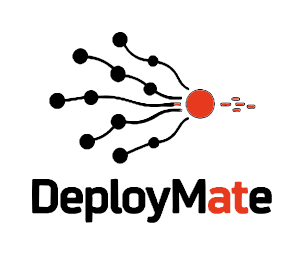

Don't just chat in a bubble.
Co-browse with the Ghost Cursor.
WebOrient by DeployMate turns any passive website into an active, live voice salesperson. Drop a single <script> tag onto Shopify, Next.js, WordPress, or Webflow—visitors talk naturally while the 60fps Cubic Bézier Ghost Cursor scrolls, spotlights, swipes carousels, and fills forms on screen.
<!-- WebOrient by DeployMate -->
<script async
src="https://weborient.deploymate.in/sdk/v1/weborient.js"
data-site-key="wo_live_9f83b271a0c4"
data-theme="signal"
data-lang="en-IN">
</script>Shadow DOM isolation, AudioWorklet pipeline, Bézier cursor & latency benchmarks.
Real-time per-minute credit metering, 20% annual switch & conversion calculator.
Copy Next.js, React, Vue, Shopify snippets & inspect all 11 Live DOM tools.
Test 11-field batch voice filling, spoken email normalization & SLA matrix.
How the Co-Pilot Operates
Switch stages or ask the Ghost Cursor to walk through each layer
Deterministic `data-wo-id` Indexing & Live Component Resolution
Every visible button, link, input, select, tab, and carousel on the host page is tagged with a deterministic data-wo-id while sensitive password and payment fields are automatically masked. Landmark sections resolve directly to their interactive tables, tabs, or forms rather than hovering on headings.
Origin-Verified WebSocket Stream & Real-Time Credit Metering
Captures 16kHz mono PCM in an AudioWorklet, verifies the customer's data-site-key and HTTP Origin on relay.deploymate.in, meters voice minutes in 30-second atomic ticks, and schedules 24kHz audio chunks gaplessly with sub-50ms barge-in interruption.
60fps Cubic Bézier Motion, Viewport Centering & Native Form Setters
Smoothly scrolls the active component into the center of the viewport, waits for scroll settlement, glides across the screen with Fitts's Law overshoot inside an isolated ShadowRoot, and invokes native prototype setters for React/Vue forms.
Zero-Drop Navigation & Refresh-Safe Language Lock
Before transitioning to a new HTML page (like pricing.html or contact.html), WebOrient clicks the link, saves cursor coordinates and non-linear To-Do checklist state in localStorage, and resumes seamlessly in the visitor's locked native language.
Production Case-Study Showcase
Built-In Security & SaaS Guardrails
| Guardrail Layer | Mechanism in DeployMate SDK / Relay | Protection Provided |
|---|---|---|
| Shadow DOM Style Isolation | #weborient-shadow-host (open ShadowRoot) | Assist toggle, soundwave bars, and Ghost Cursor never collide with host Tailwind/Bootstrap CSS. |
| Origin & Site-Key Verification | data-site-key + HTTP Origin Check | Prevents script key theft; Gemini API keys stay strictly on relay.deploymate.in. |
| Sensitive Field Blacklist | input[type="password"], [autocomplete*="cc-"] | Passwords and payment cards are never scanned, read, or modified by the agent. |
| Real-Time Credit Metering | 30s Atomic Deduction + Graceful Wrap-Up | Meters active voice minutes in real time and politely wraps up when wallet credits reach zero. |